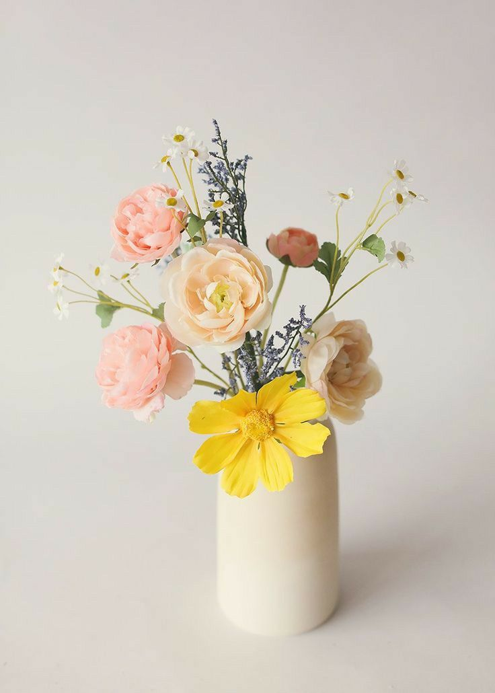
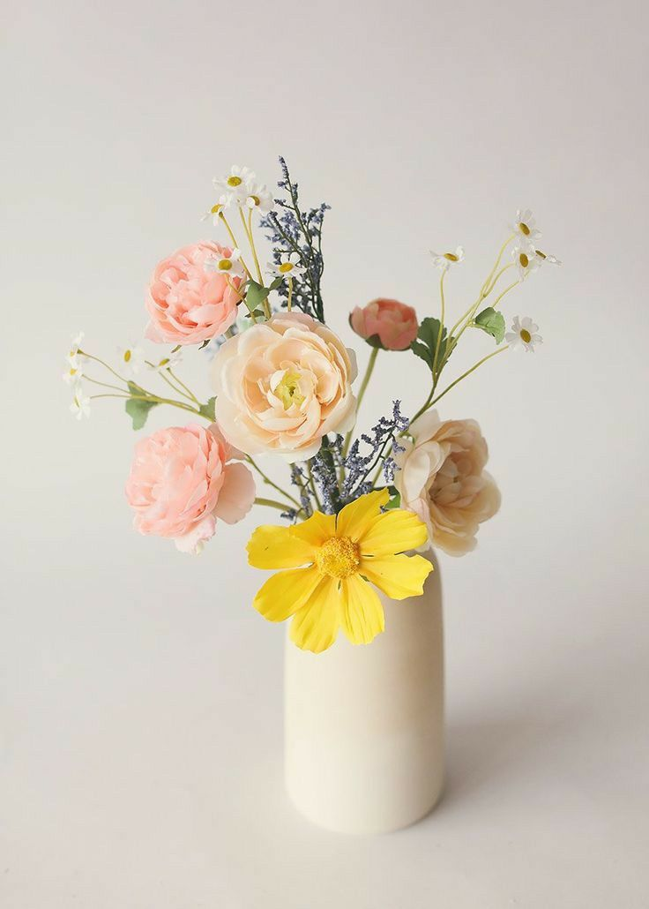

Petal & Poem
One flower, a living sonnet, blooming with the poetry of the wild.
Lilies (Lilium) are perennial bulbous plants in the family Liliaceae, native to temperate regions of the Northern Hemisphere (e.g., China, Europe, North America). They grow 40–150 cm tall with upright stems, lanceolate leaves, and funnel-shaped or trumpet-like flowers in various colors (white, pink, yellow, etc.), some fragrant. In addition to their ornamental value, lilies also carry rich symbolic meanings. In many cultures, white lilies are often associated with purity, innocence, and the divine, making them a popular choice for weddings, religious ceremonies, and expressions of reverence. Other colors of lilies may convey different emotions and messages, such as pink lilies symbolizing admiration and gratitude.
Petal & Poem
Guardians of Time: Gentle Care Guide
Water Management
Lilies enjoy plenty of water. Ensure the water level in the vase covers about one-third of the stem, change the water every 2-3 days and clean the vase.
Temperature And Light
Place lilies in a bright spot but out of direct sunlight, and keep them in a warm environment to avoid sudden temperature changes.
Stem Pruning
Trim 1-2 cm off the stem every 2-3 days to keep water absorption effective and to avoid the stem drying out.
Flower Care
Keep lilies away from heat sources and mist the flowers regularly to maintain humidity, which helps prolong their bloom.